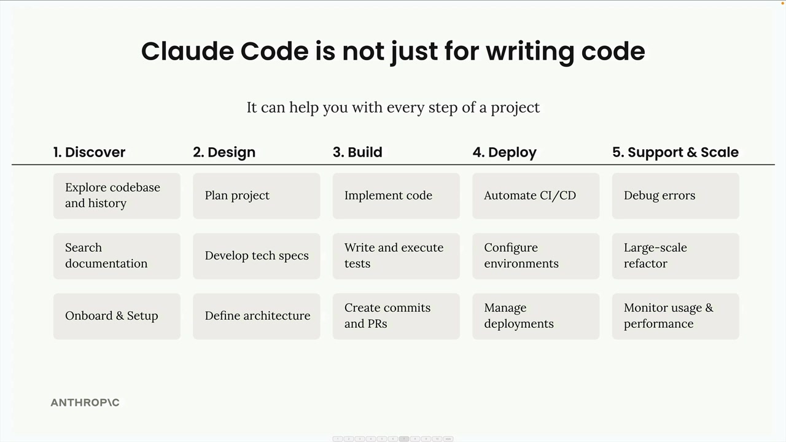
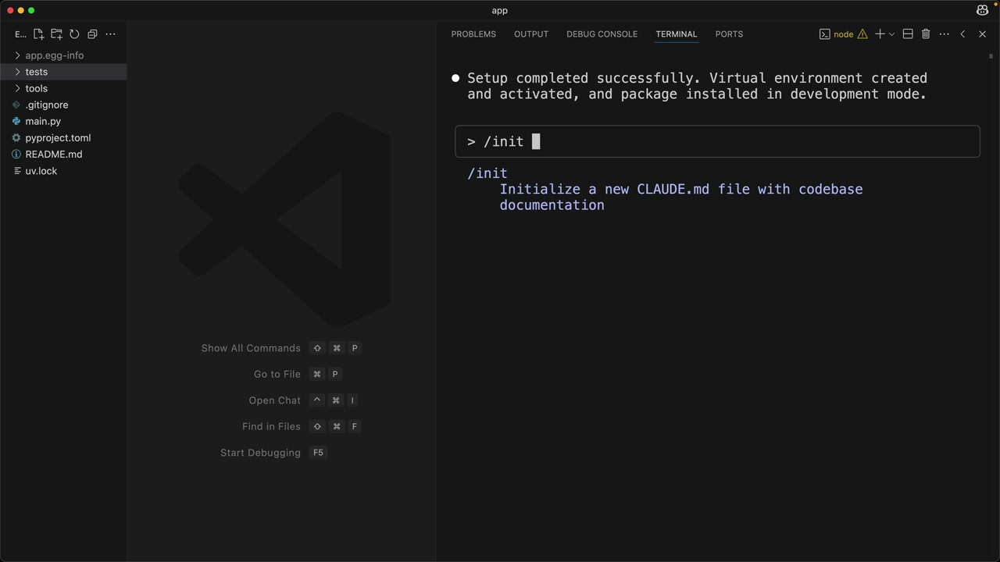
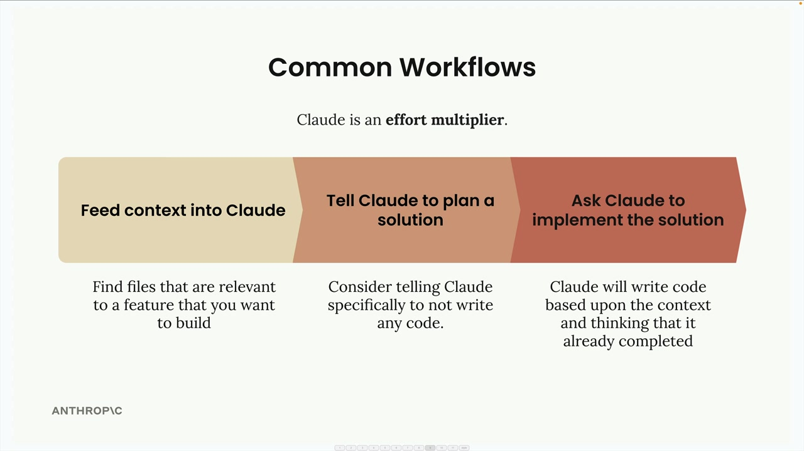
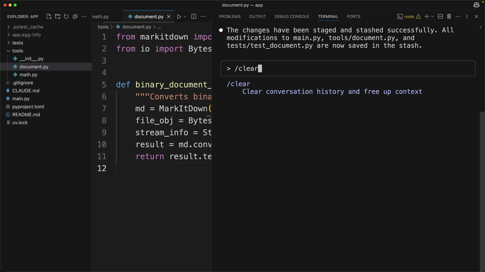

Claude Code 실전 활용
Claude Code는 단순한 코드 작성 도구가 아닙니다. 소프트웨어 프로젝트의 모든 단계에서 여러분과 함께 작업하도록 설계되었습니다. 초기 설정부터 배포 및 유지보수까지 모든 것을 처리할 수 있는 팀의 또 다른 엔지니어라고 생각하세요.

/init 명령어
프로젝트에서 Claude Code 작업을 시작할 때 가장 먼저 해야 할 일은 /init 명령어를 실행하는 것입니다. 이 명령어는 Claude에게 전체 코드베이스를 스캔하여 프로젝트의 구조, 의존성, 코딩 스타일 및 아키텍처를 파악하도록 지시합니다.
Claude는 학습한 모든 내용을 CLAUDE.md라는 특별한 파일에 요약합니다. 이 파일은 이후의 모든 대화에 컨텍스트로 자동 포함되므로, Claude가 프로젝트의 중요한 세부 사항을 기억할 수 있습니다.
다양한 범위에 맞게 여러 CLAUDE.md 파일을 사용할 수 있습니다:
- 프로젝트 - 프로젝트에 참여하는 모든 엔지니어가 공유
- 로컬 - git에 커밋되지 않는 개인 메모
- 사용자 - 모든 프로젝트에 걸쳐 사용
/init을 실행할 때 Claude가 집중하길 원하는 영역에 대한 특별 지시 사항을 추가할 수 있습니다. 생성된 파일에는 빌드 명령어, 코딩 가이드라인, Claude가 따라야 할 프로젝트별 패턴이 포함됩니다.

# 명령어를 사용하면 CLAUDE.md 파일에 빠르게 메모를 추가할 수도 있습니다. 예를 들어, # Always use descriptive variable names를 입력하면 이 가이드라인을 프로젝트, 로컬 또는 사용자 메모리에 추가할지 묻는 메시지가 표시됩니다.
일반적인 워크플로우
Claude는 노력 배가 도구로 접근할 때 가장 효과적입니다. 더 많은 컨텍스트와 구조를 제공할수록 더 나은 결과를 얻을 수 있습니다. 가장 효과적인 워크플로우는 다음과 같습니다:

1단계: Claude에 컨텍스트 제공하기
Claude에게 무언가를 만들어 달라고 요청하기 전에, 만들고자 하는 기능과 관련된 코드베이스의 파일들을 파악하세요. 먼저 Claude에게 이 파일들을 읽고 분석하도록 요청하세요. 이를 통해 Claude는 여러분의 코딩 패턴과 기존 기능을 이해하고 이를 바탕으로 작업할 수 있습니다.
2단계: Claude에게 솔루션 계획 세우기 요청하기
바로 구현으로 넘어가는 대신, Claude에게 문제를 깊이 생각하고 계획을 세우도록 요청하세요. 코드는 아직 작성하지 말고 접근 방식과 필요한 단계에만 집중하도록 명확히 지시하세요.
3단계: Claude에게 솔루션 구현 요청하기
견고한 계획이 완성되면 Claude에게 구현을 요청하세요. Claude는 함께 준비한 컨텍스트와 계획을 바탕으로 코드를 작성합니다.
테스트 주도 개발 워크플로우
더욱 나은 결과를 위해 테스트 주도 방식을 사용할 수 있습니다:

- Claude에 컨텍스트 제공 - 이전과 동일하게 Claude에게 관련 파일을 보여줍니다
- Claude에게 테스트 케이스 생각하도록 요청 - Claude가 새 기능을 검증할 테스트를 브레인스토밍하도록 합니다
- Claude에게 해당 테스트 구현 요청 - 가장 관련성 높은 테스트를 선택하고 Claude에게 작성하도록 합니다
- Claude에게 테스트를 통과하는 코드 작성 요청 - 모든 테스트가 통과할 때까지 Claude가 구현을 반복합니다
이 방식은 Claude가 달성해야 할 명확한 성공 기준을 갖게 되므로 더 견고한 코드를 만들어내는 경우가 많습니다.
실전 예시
이러한 워크플로우가 실제로 어떻게 보이는지 살펴보겠습니다. 기존 프로젝트에 문서 변환 도구를 추가하고 싶다고 가정해 봅시다:
// First, ask Claude to read relevant files
> Read the math.py and document.py files
// Then ask for planning (not implementation)
> Plan to implement document_path_to_markdown tool:
1. Create a function that:
- Takes a file path parameter
- Validates the file exists
- Determines file type from extension
- Reads binary data from file
- Leverages existing binary_document_to_markdown function
- Returns markdown string
2. Add appropriate documentation
3. Register the tool with MCP server
4. Add tests
// Finally, ask for implementation
> Implement the plan그러면 Claude가 함수를 생성하고, 필요한 파일을 업데이트하고, 테스트를 작성하고, 심지어 테스트 스위트를 실행하여 모든 것이 올바르게 작동하는지 확인합니다.
추가 명령어
Claude Code에는 여러 유용한 명령어가 포함되어 있습니다:
-
/clear- 대화 기록을 지우고 컨텍스트를 초기화합니다 -
/init- 코드베이스를 스캔하고 CLAUDE.md 문서를 생성합니다 -
#- CLAUDE.md 파일에 메모를 추가합니다
Claude는 git에 변경 사항 스테이징 및 커밋, 테스트 실행, 의존성 관리 등 일상적인 개발 작업도 처리할 수 있습니다. 편집기와 터미널 사이를 왔다 갔다 하는 대신, 이러한 작업들은 Claude에게 맡기고 더 큰 그림에 집중할 수 있습니다.
Claude Code를 성공적으로 활용하는 핵심은 단순한 코드 생성기가 아닌 협업 파트너로 설계되었다는 점을 기억하는 것입니다. 더 많은 컨텍스트와 구조를 제공할수록 Claude가 프로젝트를 구축하고 유지하는 데 더 효과적으로 도움을 줄 수 있습니다.